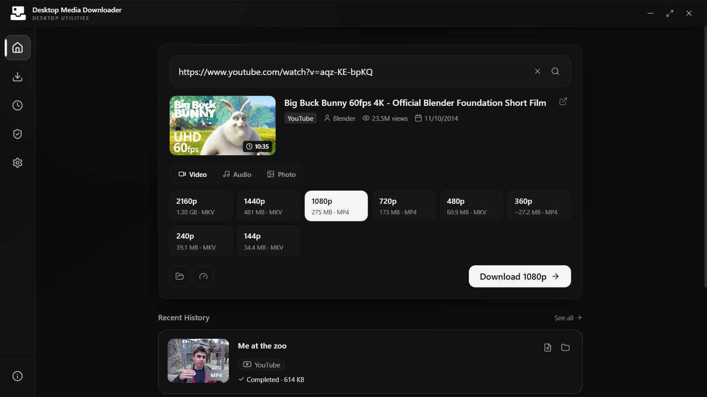

Self-contained core
Electron, a Node.js runtime, and checksum-verified yt-dlp and gallery-dl builds are included.
Open source / Windows / macOS / Linux
Save video, audio, images, and multi-image posts from YouTube, Instagram, X, TikTok, Reddit, Bluesky, and hundreds of other sites when you are authorized to save them.

Downloads
Official builds are loaded directly from the latest GitHub release.
Electron, a Node.js runtime, and checksum-verified yt-dlp and gallery-dl builds are included.
Install it for high-quality stream merging, MP3 conversion, metadata, and frame captures.
Builds are not commercially code-signed, so your system may show a warning on first install. Later updates install from within the app on Windows and Linux.
Capabilities
Analyze links, choose formats, and manage downloads without working in a terminal.
Paste a link and the app recognizes what it holds: a video lists its qualities, audio lists its formats, and an image post shows every image to choose from.
Every option shows its real size and format, from 4K video to original-quality audio.
Search YouTube, SoundCloud, Bilibili, Niconico, Reddit, Bluesky, and more, then queue several results at once.
Downloads run a few at a time with pause, resume, retry, and cancel. Finished files move to History.
For sites that need an account, import cookies exported from your own browser profile. Each site's cookies are sent only to that site.
The media engines update from their official releases and are verified against published checksums. On Windows and Linux, the app also installs its own updates.
Interface
Captures of version 1.1.0 in its dark theme.
Workflow
Run the installer. The media engines are ready on first launch.
Paste a link from a supported site, or search for one.
Pick the quality, format, images, and destination.
Follow progress in the queue. Finished files appear in History.
System & trust
Desktop Media Downloader is open source, requires no app account, and keeps its history, settings, and imported cookies in local application storage.
Only download media you are authorized to save. The app is not intended to bypass DRM, paywalls, or access controls.
Read the legal noticeNo cookies are used unless you import them. Imported cookies stay on your device and are sent only to the site they belong to.
Review the sourceVersion 1.1.0